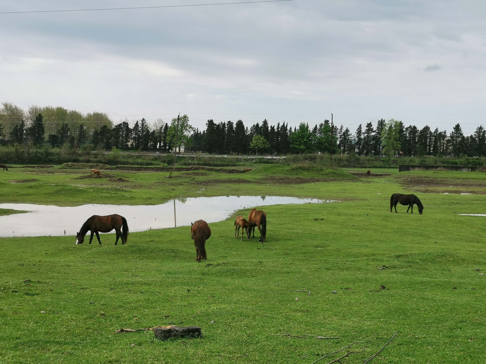
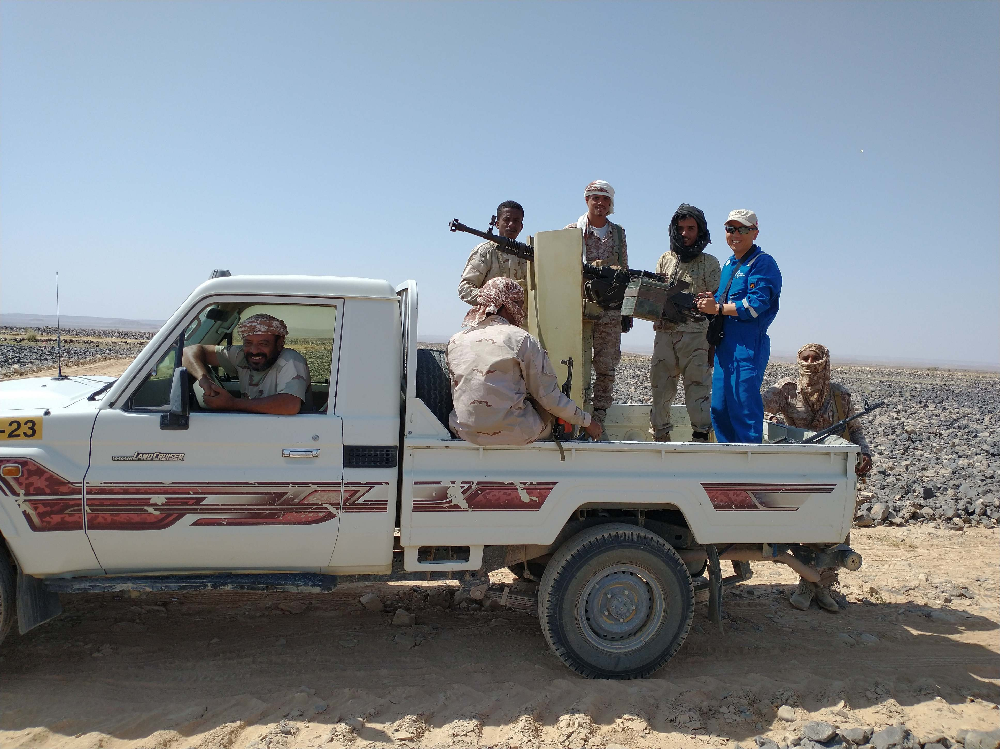
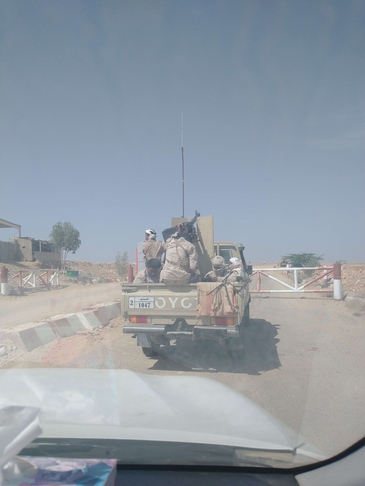
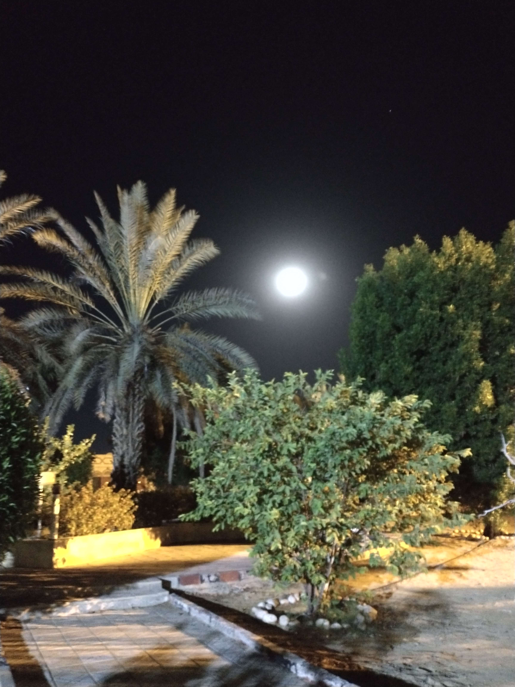

Professional Experience
since 2005
WGPEC - Georgia (11.2022 - 03.2024)
Contractor: Geofizyka International
Terrain: Swamp/Forest/Mountains/Farmland
Role: Seismic acquisition and survey positioning QC for about 330km 2D in Block-V. Involved in all aspects from scouting, survey design to drilling and recording. Nuseis node recording system and dynamite source.

PetroMasila - Yemen (01.2022 - 10.2022)
Contractor: Terraseis
Terrain: Desert/Wadis
Role: Seismic acquisition lead QC for high density vibroseis 3Ds. Stryde node recording system, Slip sweep vibroseis.
  Dodsal - Tanzania (05.2021 - 11.2021)
Contractor: BGP
Terrain: Bush/Farmland
Role: Seismic lead QC for 788 sq km 3D. Dynamite source, Smart Solo Node recording system, Boombox blaster autonomous shooting and Compressive sensing technology.
Al Yasat - Abu Dhabi (UAE)(2017 - 2019)
Contractor: BGP
Terrain: Desert
Role: On-side data processing QC for a 2D and a series of 3Ds. Sercel 428 vibroseis and high production using MSS with DS4 technique. Up to 12000 VPs/day with 30752 active channels. ProMax and GeoEast processing software. Full 3D Cube with post-stack migration.
GLencore - Chad (2014 - 2015)
Location: Mangara / Badila - Southern Chad
Contractor: BGP
Terrain: Bush/Farmland
Role: Seismic QC for a series of 2D programs. Vibroseis with Sercel 428 system. About 1300km acquired.


Tullow - Kenya (2012 - 2014)
Location: Block 10BA
Contractor: BGP
Terrain: Land and Lake
Role: Field Seismic Project Manager for for 2-year approx 2000 km 2D on land and in Lake Turkana. The source boat was converted to tow a streamer, and a few test 2D lines were done in the lake in the last period of the project. Secel 408, geophone, OBC cable, dynamite, vibrators and air guns.
Impact 2000 - Canada (2012)
Role: In-field data processor and party manager on Fairfield Zland wireless system. Worked out unique processing and QC procedures using Vista.
Total - China (2011)
Contractor: BGP
Terrain: Farmland Desert
Role: Senior Technical QC for the a 3D project in South Sulige (close to E Er Duo Si 鄂尔多斯) . Sercel 428 and dynamite source.

PetroChina - Iraq (2011)
Contractor: BGP
Terrain: Farmland Swamp
Role: Seismic QC for 530 km2 3D in Halfaya oil field. Sercel 428 instrument vibrator and dynamite sources.
Greenland Atlantic Ocean (2010)
Contractor: Gedco / McGregor
Terrain: Deep Water
Role: Employed by Gedco and worked for McGregor as Data QC and Onsite Processor for the 2D streamer seismic. About 90000 shots in three areas were processed using Vista.
Valeura - Turkey (2010)
Contractor: Merty (local company)
Terrain: Farmland
Role: Seismic QC for a series of 2Ds in SE Turkey including parameter tests. Sercel 428 & Vibroseis.
Glencore - Cameroon (2010)
Contractor: BGP
Terrain: Shallow Ocean
Role: Senior Technical QC for 200 km2 3D in Douala (Wouri Estuary). Swamp and shallow marine program using Sercel 408 with dual sensor OBC & airguns.
Statoil Hydro - Canada (2009)
Contractor: Conquest
Terrain: Oil Sands in north of Alberta
Role: 3D base-line Vibroseis technical Audit for mini vibrators. Vista used to test vibrators.
CNPC Silk Road Group - Uzbekistan (2009)
Contractor: BGP
Terrain: Dired lake bed (Desert-Bush-Sabkha)
Role: Seismic lead QC for the 1700 km in Aral Sea (on shore) 2D Programme. Vibroseis and dynamite sources.

Junex - Canada (2008)
Contractor: Conquest
Terrain: Mountain & Transition Zone
Role: Seismic QC for a 3D in Gaspe Quebec. Aram 24 recording system, vibroseis & dynamite, geophone & hydrophone. Vista used to test vibrators and to QC data.
Conoco Phillips - Libya (2007 - 2008)
Contractor: BGP
Terrain: Rock Desert
Role: Seismic Data QC for HFVS 3D project (1 and half years). Uncorrelated data recorded. Vista was used for data QC and to ensure data integrity.
CNPC - Chad (2007)
Contractor: BGP
Terrain: Forest & Farmlands
Role: Seismic QC for 500 km2 3D Vibroseis survey in Ronier area. Sercel 408 recorder and GriSys processing system. Thick bushes and villages.
EnCana - Chad (2006 - 2007)
Contractor: BGP
Terrain: Forest & Farmland
Role: Seismic QC for a series of Vibroseis 2Ds. Sercel 408 recorder. Unstable political situation over the country.
Verenex - Libya (2006)
Contractor: AGESCO
Terrain:Desert
Role: Seismic QC for 3D and 2D Vibroseis in the Ghadames Basin. Sercel 408 recorder and VE 432. Triple-stagger 3D geometry.


Shell - Libya (2006)
Contractor: BGP
Terrain: Desert
Role: Seismic QC for 2D Vibroseis with Sercel 408 across areas covered by mines and unexploded ordnance (UXO) from World War II.
Verenex - Libya (2006)
Contractor: AGESCO
Terrain:Desert
Role: Seismic QC for 240 km2 3D Vibroseis Ghadames Basin. Sercel 408 VE 432.
CNPC - Mauritania (2005)
Contractor: BGP
Terrain:Desert
Role: Seismic QC for 1000 km 2D in Block 12 & 20 Coastal Basin Mauritania. Sercel 408 Pelton Advance II.